繊維系断熱材
繊維系断熱材について
繊維系断熱材の特徴
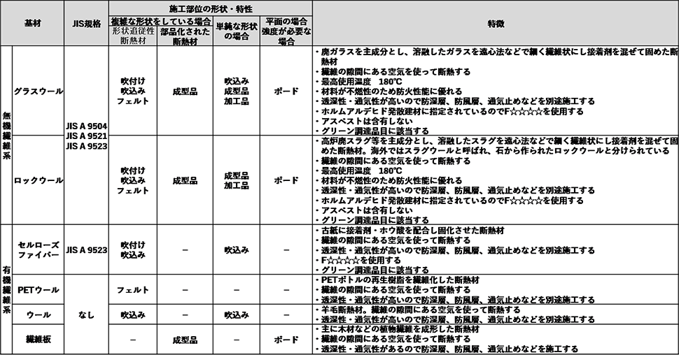
形状による分類
熱の移動を抑制し温かい料理を保温するために布で包んだり、寒さを防止するためにセーターを着るなど人間は古くから断熱材を利用してきましたが、工業的に断熱材を使用し始めたのは蒸気機関が発明されてからです。使用される断熱材が規格化されたのは第一次世界大戦前後で、戦艦の蒸気配管断熱の軍規格が最初と言われています。
戦後多くの種類の断熱材が開発され、生産･需要の拡大を受け規格も整備されてきました。各種断熱材の開発･製造開始時期を表にまとめました。
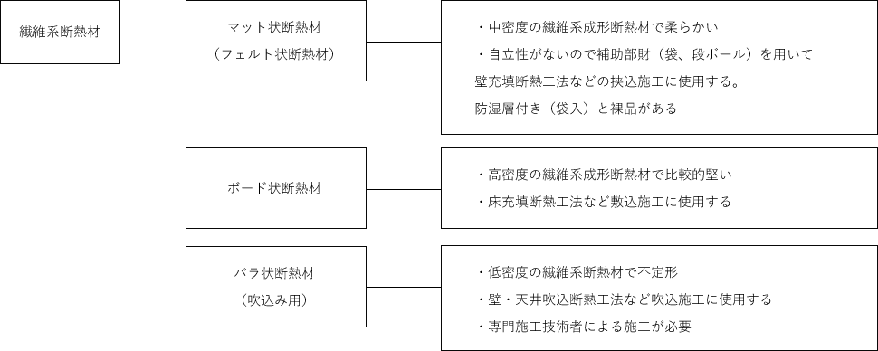
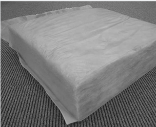
マット状断熱材
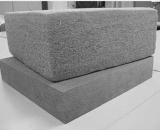
ボード状断熱材
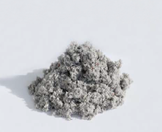
バラ状断熱材（吹込み用）
繊維系断熱材の製造方法1
溶融紡糸法（GW、RW、PET ウールなど）
グラスウール、ロックウールのように繊維の元となる原料を加熱溶融させ遠心力を利用した繊維化装置などにより製造する方法
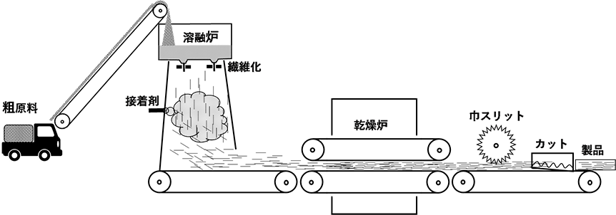
繊維系断熱材の製造方法2
解砕紡糸法（CF、木繊維等）
セルローズファイバー、インシュレーションファイバーのように元となる繊維状物質を解繊する製造方法
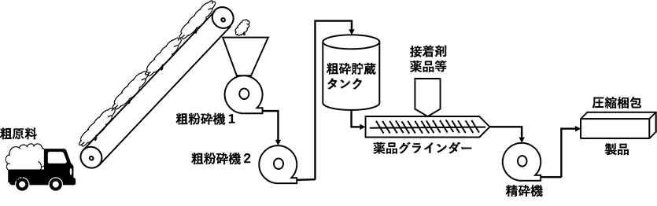
繊維系断熱材と断熱理論
密度依存性
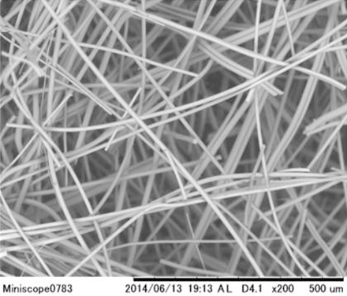
グラスウールの顕微鏡写真（×200）
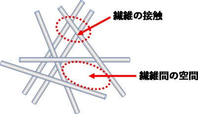
繊維系断熱材では固体成分が繊維状であるため固体の熱流が二次元となり繊維配向、繊維径の影響を大きく受けます。
製品を微視的に見ると密度の不均一が存在し、密度が低い場合にその影響が大きくなります。
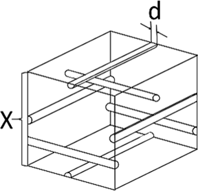
図1 繊維系断熱材の模式図
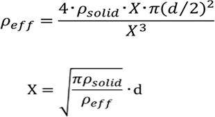
一辺がX（m）である立方体内部に直径d（m）の繊維を直行させ規則的に配列した図1 のモデルを考えた場合、立方体内部に存在する繊維本数は4 本です。したがって密度は式(1) で示されます。また断熱材の密度が一定の場合、立方体体積式(2) は繊維径に依存することが分かります。
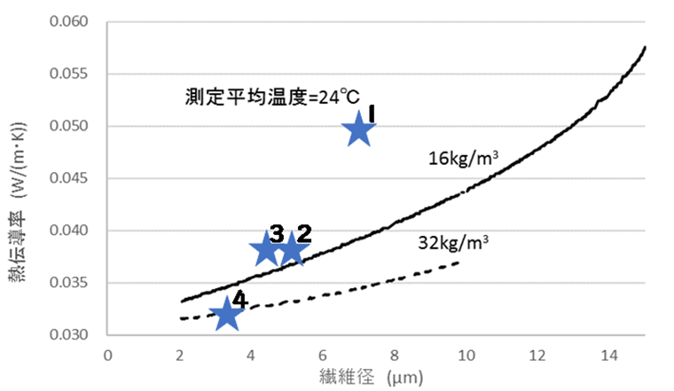
グラスウールの繊維径と熱伝導率の関係
断熱建材ハンドブック
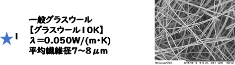
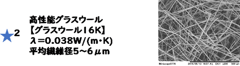
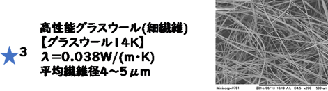
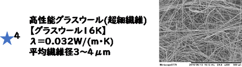
写真提供：旭ファイバーグラス株式会社
熱伝導率の繊維配向の影響
- 繊維配向が熱流に平行である場合の式
-
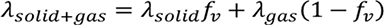
- 繊維配向が熱流に直角である場合の式
-
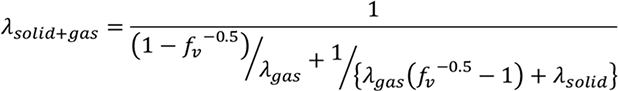
λsolid＋gas：輻射を除いた固体、気体の熱伝導率の和
λsolid、λgas：固体及び気体の熱伝導率
fv：固体の体積分率（ρeff/ρsolid）
ρeff、ρsolid：断熱材及び固体の密度
繊維系断熱材の繊維配向は繊維軸方向の固体の性能に直結するため、断熱性能や機械強度に大きく影響します。
マット状製品の場合は製造方法の特性上、繊維は製品の長軸方向（厚さと直角方向）となるので断熱性能が高くなる配向になります。
ボード製品も同じ傾向となりますが、使用用途の特性で強度が要求される場合などでは繊維配向が厚さ方向となっている製品（ラメラ構造）が使用されることもあります。
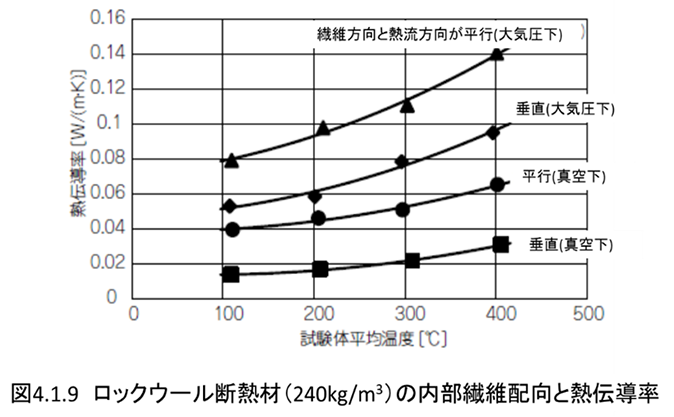
大村高弘,「繊維質断熱材と耐火材の熱伝導率」, ニチアス技術時報,NO.320,(2000),4 号
均一な密度の繊維系断熱財の熱電動率の幅射伝熱の影響
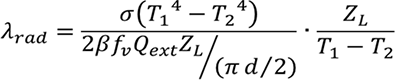
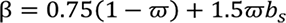
繊維系断熱材の輻射伝熱の影響は低密度で大きくなる傾向がありますが、実験的に測定したり設計したりすることが困難なので一般的には密度の影響としてマクロに取り扱います。
λrad：輻射の熱伝導率（W/(m･K))
σ：ステファン・ボルツマン定数（5.670367×10－8 W/(m2 K4)
T1，T2：高温，低温側の温度（K）
ZL：断熱材厚さ（m）
ω：散乱アルベド （図1）
Qext：平均減衰効果率因子（ 図 2）
bs：逆散乱割合 （図3）
この内、Qext ､ω､bs は繊維の光学物性から算出される値
-
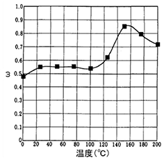
図(1) グラスウール断熱材の散乱アルベド
-
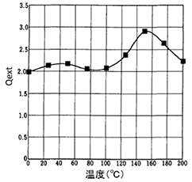
図(2) グラスウール断熱材の平均減衰効果率因子
-
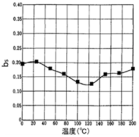
図(3) グラスウール断熱材の逆散乱割合
大村高弘,「繊維質断熱材と耐火材の熱伝導率」, ニチアス技術時報,NO.320,(2000),4 号
李et.al.，「グラスウール断熱材の有効熱伝導率の解析」, 空気調和・衛生工学会論文集，No.65,P8,(1997)4 月
熱伝導率の湿度依存性
インシュレーションファイバーボードやセルローズファイバーの様な有機繊維基材が木繊維や紙の場合、外部の湿度変化により空隙の空気だけでなく繊維そのものが吸放湿するために単位重量あたりの水蒸気吸収量が大きくなります。その結果、熱伝導率の湿度による影響が大きく出やすく、また吸放湿することで変化した状態が長く継続する傾向があります。
この吸水性は短時間の現象としては結露等の液水の発生を防止できるというメリットとなりますが、長期的には高湿度状態を継続し腐朽等の危険性を増す場合も懸念されるので、長時間高湿度となる場所での使用は控えるのが良いでしょう。
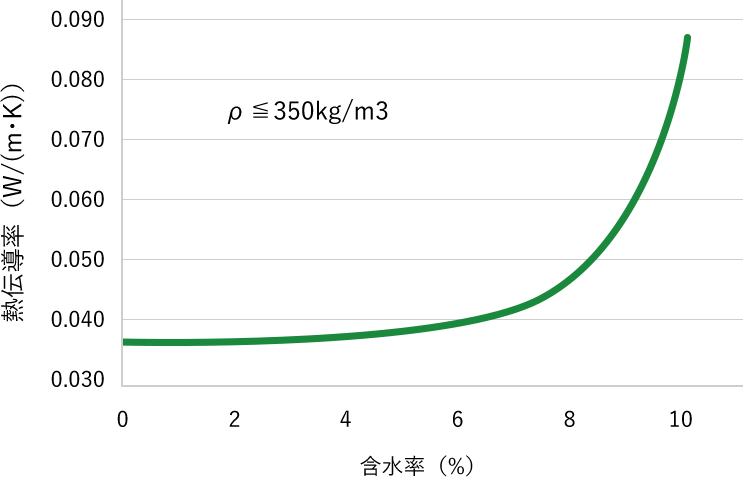
A 級インシュレーションファイバーボードの含水率と熱伝導率の関係
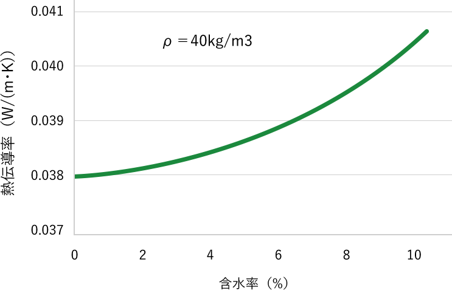
セルローズファイバーの含水率と熱伝導率の関係